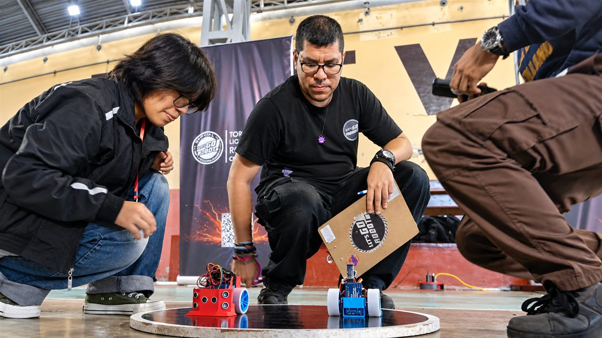

Noticias FIEI ·
Así se vivió el Villatrónica 2026 en la Villarreal
La semana tecnológica reunió talleres, demostraciones y competencias organizadas por estudiantes de la FIEI.

La XII Semana Tecnológica VILLATRÓNICA 2026 se desarrolló del 9 al 12 de setiembre bajo el formato TechFest. La iniciativa fue organizada por la Rama Estudiantil IEEE y la Sociedad de Robótica y Automatización.
Durante la semana se realizaron talleres y actividades sobre diseño de circuitos impresos, inteligencia artificial, robótica y automatización. Los participantes también pudieron poner a prueba sus proyectos en competencias de seguidores de línea, robots sumo y fútbol robótico.
El encuentro acercó a estudiantes de distintas especialidades a experiencias prácticas y promovió el intercambio de conocimientos en tecnología e ingeniería.